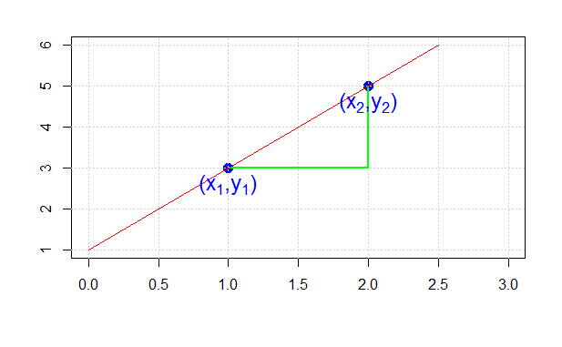

Lesson 5 Simple Linear Regressio
(Chapter 3 ISL book)
import pandas as pd
import numpy as np
import matplotlib.pyplot as plt
from mpl_toolkits.mplot3d import axes3d
import seaborn as sns
import scipy
from sklearn.preprocessing import scale
import sklearn.linear_model as skl_lm
from sklearn.metrics import mean_squared_error, r2_score
import statsmodels.api as sm
import statsmodels.formula.api as smf
# %matplotlib inline
sns.set_style('white')Load Datasets
Datasets available on http://faculty.marshall.usc.edu/gareth-james/ISL/
advertising = pd.read_csv('../data/Advertising.csv', usecols=[1,2,3,4])
advertising.info()## <class 'pandas.core.frame.DataFrame'>
## RangeIndex: 200 entries, 0 to 199
## Data columns (total 4 columns):
## # Column Non-Null Count Dtype
## --- ------ -------------- -----
## 0 TV 200 non-null float64
## 1 Radio 200 non-null float64
## 2 Newspaper 200 non-null float64
## 3 Sales 200 non-null float64
## dtypes: float64(4)
## memory usage: 6.4 KBcredit = pd.read_csv('../data/Credit.csv', usecols=list(range(1,12)))
credit['Student2'] = credit.Student.map({'No':0, 'Yes':1})
credit.head(3)## Income Limit Rating Cards ... Married Ethnicity Balance Student2
## 0 14.891 3606 283 2 ... Yes Caucasian 333 0
## 1 106.025 6645 483 3 ... Yes Asian 903 1
## 2 104.593 7075 514 4 ... No Asian 580 0
##
## [3 rows x 12 columns]auto = pd.read_csv('../data/Auto.csv', na_values='?').dropna()
auto.info()## <class 'pandas.core.frame.DataFrame'>
## Int64Index: 392 entries, 0 to 391
## Data columns (total 10 columns):
## # Column Non-Null Count Dtype
## --- ------ -------------- -----
## 0 mpg 392 non-null float64
## 1 cylinders 392 non-null int64
## 2 displacement 392 non-null float64
## 3 horsepower 392 non-null int64
## 4 weight 392 non-null int64
## 5 acceleration 392 non-null float64
## 6 year 392 non-null int64
## 7 origin 392 non-null int64
## 8 name 392 non-null object
## 9 Manufacturer 392 non-null object
## dtypes: float64(3), int64(5), object(2)
## memory usage: 33.7+ KB5.1 Loss Functions
Let us take a quick look at the distribution of weights and compute summary statistics
tmp=plt.hist(auto["weight"])
# LE = location estimate
LE1 = np.round(np.mean(auto["weight"]),2)
LE2 = np.round(np.median(auto["weight"]),2)
LE3 = scipy.stats.mode(np.round(auto["weight"]/100)*100)
plt.vlines(LE1,0,100, colors="red")## <matplotlib.collections.LineCollection object at 0x7fb109a3fbe0>plt.vlines(LE2,0,100, colors="black")## <matplotlib.collections.LineCollection object at 0x7fb1098d75c0>plt.vlines(LE3[0],0,100, colors="green")## <matplotlib.collections.LineCollection object at 0x7fb109abbdd8>print("mean:", LE1)## mean: 2977.58print("median:", LE2)## median: 2803.5print("mode:", LE3)## mode: ModeResult(mode=array([2200.]), count=array([28]))We can see a marked difference between the mean and the median (why again?). That brings up the general question, how to choose from the various “location measures” of a distribution, such as the mean, median, trimmed mean, geometric mean, harmonic mean, …
Can we define an objective optimality measure which would clearly favor one metric over another ? Welcome to the concept of a loss function. We all feel intuitively that the orange line (at 3615 lb) is in some sense inferior to the red and green numbers as a location measure. Why, because the distance from the data to orange is (on the average) larger than the distance to red and green. Let us call that average distance a “loss” and assume that we want to minimize loss.
It turns out that there is not just one but various ways to define this distance/loss function (“LE” = location estimate):
- \[ L_0 = (1/n) \cdot \sum_{i=1}^n{|x_i - LE|^0}\]
- \[ L_1 = (1/n) \cdot \sum_{i=1}^n{|x_i - LE|^1}\]
- \[ L_2 = (1/n) \cdot \sum_{i=1}^n{|x_i - LE|^2}\]
- \[ L_p = (1/n) \cdot \sum_{i=1}^n{|x_i - LE|}^p\]
Your Tasks:
- Identify the one that is minimized by the average.
- Identify the one that is minimized by the median.
- Which measure is minimized by \(L_0\) ?
- Verify your assertions emprically !
def L2(x,LE):
return(np.mean((x - LE) * (x - LE)))
xg = np.linspace(LE1-20, LE1 +20, 51)
MSE = np.empty_like(xg)
for i, a in enumerate(xg):
MSE[i]= L2(auto["weight"], a)
tmp=plt.scatter(xg,MSE)5.2 Least Squares
Loss Function = squared residuals !
Least Squares equals minimizing \(RSS = \sum_{i=1}^n{u_i^2}\)
- Remind yourself of the definition of the slope of a straight line

\[ \beta_1 = \frac{\Delta y}{\Delta x} = \frac{y_2-y_1}{x_2-x_1} \]
plt.figure(figsize=(8,6))## <Figure size 800x600 with 0 Axes>tmp=sns.regplot(x=auto["weight"], y=auto["mpg"], order=1, ci=95,
scatter_kws={'color':'b', 's':9}, line_kws={'color':'r'})sklearn does not seem to offer even standard errors!
Module statsmodels gives output closer in line with other statistical software:
est = smf.ols('mpg ~ weight', auto).fit()
est.summary().tables[1]## <class 'statsmodels.iolib.table.SimpleTable'>est = smf.ols('mpg ~ C(origin) + weight', auto).fit()
est.summary().tables[1]## <class 'statsmodels.iolib.table.SimpleTable'>est = smf.ols('Sales ~ Newspaper', advertising).fit()
est.summary().tables[1]## <class 'statsmodels.iolib.table.SimpleTable'>est = smf.ols('mpg ~ horsepower', auto).fit()
est.summary(alpha=0.01).tables[1]## <class 'statsmodels.iolib.table.SimpleTable'>from scipy.stats import t
tC =t.ppf(0.995,390)#2.588
-0.1578 - tC*0.006
#-0.1578 + tC*0.006## -0.17333096475794071est.conf_int(alpha = 0.01)## 0 1
## Intercept 38.0786 41.7931
## horsepower -0.1745 -0.1412Reproducing the ISL Book
In the following sections we are mainly reproducing figures and results from the ISL book.
Figure 3.1 - Least squares fit
plt.figure(figsize=(8,6))## <Figure size 800x600 with 0 Axes>sns.regplot(x=advertising.TV, y=advertising.Sales, order=1, ci=None, scatter_kws={'color':'r', 's':9})## <AxesSubplot:xlabel='TV', ylabel='Sales'>plt.xlim(-10,310)## (-10.0, 310.0)plt.ylim(ymin=0);Figure 3.2 - Regression coefficients - RSS Note that the text in the book describes the coefficients based on uncentered data, whereas the plot shows the model based on centered data. The latter is visually more appealing for explaining the concept of a minimum RSS. I think that, in order not to confuse the reader, the values on the axis of the B0 coefficients have been changed to correspond with the text. The axes on the plots below are unaltered.
np.corrcoef(advertising.TV, advertising.Sales)## array([[1. , 0.78222442],
## [0.78222442, 1. ]])#what data structures does the fit function want?
X = np.array([[1, 1], [1, 2], [2, 2], [2, 3]])
y = np.dot(X, np.array([1, 2])) + 3
reg = skl_lm.LinearRegression().fit(X, y)
reg.coef_## array([1., 2.])type(advertising.Sales)## <class 'pandas.core.series.Series'># Regression coefficients (Ordinary Least Squares)
regr = skl_lm.LinearRegression()
#X = scale(advertising.TV, with_mean=True, with_std=False).reshape(-1,1)
X=advertising.TV.values.reshape(-1,1)
X = scale(advertising.TV, with_mean=True, with_std=False).reshape(-1,1)
y = advertising.Sales.values
regr.fit(X,y)## LinearRegression()print(regr.intercept_)## 14.0225print(regr.coef_)## [0.04753664]Tasks
- Compute the residuals, their sum and RSS (are they different for non-centered X?)
- Compute \(R^2\) and compare with the correlation coefficient \(\rho\).
- Interpret the meaning of the slope \(\hat{\beta_1}\).
- Obtain \(SE(\hat{\beta_1})\) and a 95% confidence interval for the slope.
- Discuss how one could use resampling to obtain non-parametric confidence intervals
- (homework) Test whether the true slope could be 0.
Least Squares
Is RSS really minimized ?
# Minimized RSS
min_rss = np.sum((regr.intercept_+regr.coef_*X - y.reshape(-1,1))**2)/1000
min_rss## 2.1025305831313514
Confidence interval on page 67 & Table 3.1 & 3.2 - Statsmodels
est = smf.ols('Sales ~ TV', advertising).fit()
est.summary().tables[1]## <class 'statsmodels.iolib.table.SimpleTable'># RSS with regression coefficients
((advertising.Sales - (est.params[0] + est.params[1]*advertising.TV))**2).sum()/1000## 2.102530583131351

|

|
regr = skl_lm.LinearRegression()
X = advertising.TV.values.reshape(-1,1)
y = advertising.Sales
regr.fit(X,y)## LinearRegression()print(regr.intercept_)## 7.032593549127695print(regr.coef_)## [0.04753664]Sales_pred = regr.predict(X)
r2_score(y, Sales_pred)## 0.611875050850071